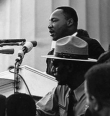
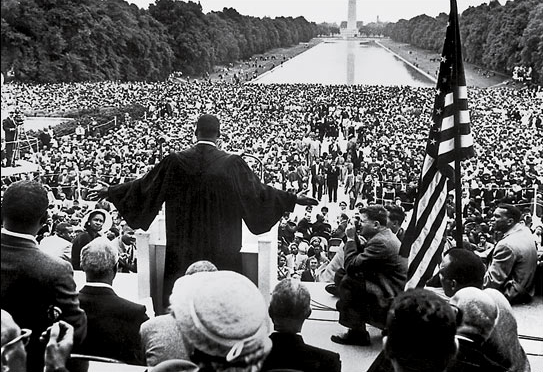

MLK’s famous speech.
U.S. House Representative John Lewis:
"Dr. King had the power, the ability, and the capacity to transform those steps on the Lincoln Memorial into a monumental area that will forever be recognized.
By speaking the way he did, he educated, he inspired, he informed not just the people there, but people throughout America and unborn generations."
On August 28, 1963 Martin Luther K. Jr. delivered one of the most powerful speeches in modern day history, his famous “I have a dream” speech, at the March on Washington for Jobs and Freedom event.
He called for an end to racial inequality and for an end to racial discrimination.
It was a crucial moment for the civil rights moments (1955–1968), and is one of the nations’ most famous video documented speeches of all time.
MLK’s famous speech boosted the civil right movement’s momentum and got it attention both nationally, and internationally.
Eventually the movement went on to abolish segregation in American by the government (mostly).
His speech put torque on the current white house administration (Kennedy) to advance Civil Rights legislation as well.
The view from the Lincoln Memorial toward the Washington Monument on August 28, 1963.
MLK delivering his speech.
Mr. King has the crowd’s complete undivided attention as he makes history.
A man of conviction